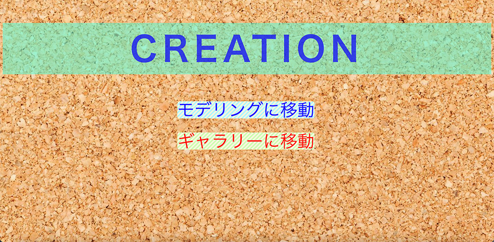

Creation


簡易的なモデリングが可能なWebサイト。WebPで制作した作品。
⾊々な形のオブジェクトを、位置やサイズ、色を変えて画⾯に配置することができる。
その後、できたモデルを画像として保存し、その写真を画像加⼯したり、ギャラリーとして展⽰することができる。

トップページ
モデリング画面1
モデリング画面2
画像加工
ギャラリー
担当
主にJavaScript。モデリング画面のトラッキング実装と、モデルを掴んで移動させられるようにした。画面遷移など全体の調整。
ちょっとひとこと
上の黄色いキャラはなんとなくできた、ジャンプにいそうな(いたような)キャラ。
この日、初めて、Zoom途中退室が許されたのかもしれない。
この日、初めて、Zoom途中退室が許されたのかもしれない。
Copyright © by Kissyossy 2021